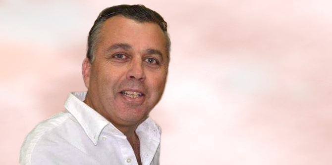

Munir Madi, a resident of the northern town of Julis, has been honored with lighting a beacon at the opening ceremony of the celebrations of Israel’s 74th Independence Day. A lieutenant colonel in the reserves, Madi served in the Israel Defense Forces for 25 years in command and training positions. In his last role, he served as commander of the Druze section of the IDF's Personnel Directorate. Prior to that, he led the Atidim project to promote higher education in the Druze sector and initiated the establishment of a unique volunteering framework in the national civil service for young women in the Druze community.
In 2008 Madi was one of the founders of the Kerem El pre-military academy in the Druze town of Daliyat al-Carmel, which prepares Druze and Jewish youth for military service. Since his discharge from the IDF in 2013, Madi has headed the academy. The preparatory program connects Jewish and Druze youth, breaks down barriers, and unites the participants with a shared sense of solidarity and service to their country. During the COVID-19 pandemic, the academy spearheaded many volunteer initiatives.
Madi holds a bachelor's degree in Middle Eastern history and a master's degree in Israel studies, both from the University of Haifa. In 2010-2011, Madi was a fellow in the Mandel Leadership Institute. In 2017, he was awarded the “Comper Ambassadors Online” award by the Elizabeth and Tony Comper Interdisciplinary Center for the Study of Antisemitism and Racism at the University of Haifa for his Israel advocacy and efforts to combat the delegitimization of Israel throughout the world.
Minister of Culture and Sports Chili Tropper explained the committee’s selection of Madi as torch lighter by citing his major contribution to fostering solidarity in Israeli society: “Munir Madi is a prominent educator who has been involved for many years, first in his military service and later as a civilian, in providing equal opportunities for every person and connecting different sectors of society. Madi is a symbol of the significant bond formed between Druze society and Israeli society.”
The ceremony will take place on Mount Herzl in Jerusalem on the eve of Israel Independence Day.

{kind=link}